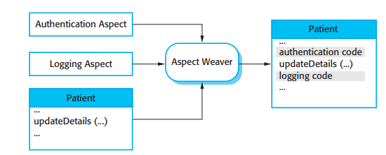

<!DOCTYPE html>
<html lang="en">
<head>
    <meta charset="UTF-8">
    <meta name="viewport" content="width=, initial-scale=1.0">
    <title>chapter21</title>
</head>
<body>
    <main>
        <header>
            <h1>Aspect-oriented software engineering</h1>
            </header>
            <main>
            <section>
                <p>
                    In most large systems, the relationships between the requirements and the program
                        components are complex. A single requirement may be implemented by a number of
                        components and each component may include elements of several requirements. 
                        In practice, this means that implementing a change to the requirements may involve
                        understanding and changing several components. Alternatively, a component may
                        provide some core functionality but also include code that implements several system
                        requirements. Even when there appears to be significant reuse potential, it may be
                        expensive to reuse such components. Reuse may involve modifying them to remove
                        extra code that is not associated with the core functionality of the component.
                </p>
                <p>
                    Aspect-oriented software engineering (AOSE) is an approach to software development that is intended to address this problem and so make programs easier to
                        maintain and reuse. AOSE is based around abstractions called aspects, which
                        implement system functionality that may be required at several different places in a
                        program. Aspects encapsulate functionality that cross-cuts and coexists with other
                        functionality that is included in a system. They are used alongside other abstractions such as objects and methods. An executable aspect-oriented program is
                        created by automatically combining (weaving) objects, methods, and aspects,
                        according to specifications that are included in the program source code.
                </p>
                <p>
                    An important characteristic of aspects is that they include a definition of where
                        they should be included in a program, as well as the code implementing the crosscutting concern. You can specify that the cross-cutting code should be included
                        before or after a specific method call or when an attribute is accessed. Essentially,
                        the aspect is woven into the core program to create a new augmented system.
                </p>
                <p>
                    The key benefit of an aspect-oriented approach is that it supports the separation of
                        concerns. As I explain in Section 21.1, separating concerns into independent elements rather than including different concerns in the same logical abstraction is good
                        software engineering practice. By representing cross-cutting concerns as aspects,
                        these concerns can be understood, reused, and modified independently, without
                        regard for where the code is used. For example, user authentication may be represented as an aspect that requests a login name and password. This can be automatically woven into the program wherever authentication is required.
                </p>
                <p>
                    Say you have a requirement that user authentication is required before any change
                        to personal details is made in a database. You can describe this in an aspect by stating that the authentication code should be included before each call to methods that
                        update personal details. Subsequently, you may extend the requirement for authentication to all database updates. This can easily be implemented by modifying the
                        aspect. You simply change the definition of where the authentication code is to be
                        woven into the system. You do not have to search through the system looking for all
                        occurrences of these methods. You are therefore less likely to make mistakes and
                        introduce accidental security vulnerabilities into your program
                </p>
                <p>
                    Research and development in aspect-orientation has primarily focused on aspectoriented programming. Aspect-oriented programming languages such as AspectJ
                        (Colyer and Clement, 2005; Colyer et al., 2005; Kiczales, et al., 2001; Laddad,
                        2003a; Laddad, 2003b) have been developed that extend object-oriented programming to include aspects. Major companies have used aspect-oriented programming
                        in their software production processes (Colyer and Clement, 2005). However, crosscutting concerns are equally problematic at other stages of the software development
                        process. Researchers are now investigating how to utilize aspect-orientation in system requirements engineering and system design, and how to test and verify aspectoriented programs
                </p>
                <p>
                    I have included a discussion of AOSE here because its focus on separating concerns is an important way of thinking about and structuring a software system.
                        Although some large-scale systems have been implemented using an aspect-oriented
                        approach, the use of aspects is still not part of mainstream software engineering. As
                        with all new technologies, advocates focus on the benefits rather than the problems
                        and costs. Although it will be some time before AOSE is routinely used alongside
                        other approaches to software engineering, the idea of separating concerns that underlies AOSE are important. Thinking about the separation of concerns is a good general approach to software engineering.
                </p>
                <p>
                    In the remaining sections of the chapter, I therefore focus on the concepts that are
                        part of AOSE and discuss the advantages and disadvantages of using an aspectoriented approach at different stages of the software development process. As my
                        aim is to help you understand the concepts underlying AOSE, I do not go into detail
                        of any specific approach or aspect-oriented programming language.
                </p>
            </section>
                    <section>
                        <h2>21.1 The separation of concerns</h2>
                        <p>The separation of concerns is a key principle of software design and implementation.
                            It means that you should organize your software so that each element in the program
                            (class, method, procedure, etc.) does one thing and one thing only. You can then
                            focus on that element without regard for the other elements in the program. You can
                            understand each part of the program by knowing its concern, without the need to
                            understand other elements. When changes are required, they are localized to a small
                            number of elements.</p>
                        <p>The importance of separating concerns was recognized at an early stage in the
                            history of computer science. Subroutines, which encapsulate a unit of functionality,
                            were invented in the early 1950s and subsequent program structuring mechanisms
                            such as procedures and object classes have been designed to provide better mechanisms for realizing the separation of concerns. However, all of these mechanisms
                            have problems in dealing with certain types of concern that cut across other concerns. These cross-cutting concerns cannot be localized using structuring mechanisms such as objects or functions. Aspects have been invented to help manage these
                            cross-cutting concerns.</p>
                        <p>Although it is generally agreed that separating concerns is good             software        engineering practice, it is harder to pin down what is         actually meant by a concern. Sometimes
                            it is defined as a functional notion (i.e., a concern is some element of functionality in
                            a system). Alternatively, it may be defined very broadly as ‘any piece of interest orfocus in a program’. Neither of these definitions is particularly useful in practice.
                            Concerns certainly are more than simply functional elements but the more general
                            definition is so vague that it is practically useless.</p>
                        <p>In my view, most attempts to define concerns are problematic because they
                            attempt to relate concerns to programs. In fact, as discussed by Jacobson and Ng
                            (2004), concerns are really reflections of the system requirements and priorities of
                            stakeholders in the system. System performance may be a concern because users
                            want to have a rapid response from a system; some stakeholders may be concerned
                            that the system should include particular functionality; companies who are supporting a system may be concerned that it is easy to maintain. A concern can therefore be
                            defined as something that is of interest or significance to a stakeholder or a group of
                            stakeholders.</p>
                            If you think of concerns as a way of organizing requirements, you can see why an
                            approach to implementation that separates concerns into different program elements is
                            good practice. It is easier to trace concerns, expressed as a requirement or a related set
                            of requirements, to the program components that implement these concerns. If the
                            requirements change, then the part of the program that has to be changed is obvious.
                            
                    <section>
                        <h4>There are several different types of stakeholder concern</h4>
                        <ol>
                            <li>Functional concerns, which are related to the specific functionality        to     be included
                                in a system. For example, in a train control system, a specific functional concern
                                is train braking.</li>
                            <li>Quality of service concerns, which are related to the non-functional behavior of
                                a system. These include characteristics such as performance, reliability, and
                                availability.</li>
                            <li>Policy concerns, which are related to the overall policies that govern the use of
                                a system. Policy concerns include security and safety concerns and concerns
                                related to business rules</li>
                            <li>System concerns, which are related to attributes of the system as a whole, such
                                as its maintainability or its configurability</li>
                            <li>Organizational concerns, which are related to organizational goals and priorities. These include producing a system within budget, making use of existing
                                software assets, and maintaining the reputation of the organization</li>

                                
                                <h4>Figure 21.1 Crosscutting concerns</h4>
                        </ol>

                <section>

                    </section>
                    <p>A data acquisition system involves a producer and consumer process putting data in a shared buffer, with the main function being to add and remove elements. Synchronization is crucial to prevent interference between processes, ensuring that neither overwrites un consumed data nor takes data from empty buffers.</p>
                    <p>Secondary concerns, such as service quality and organizational policies, are cross-cutting concerns that apply to the entire system, while secondary functional concerns may be cross-cutting but are associated with core concerns providing related functionality.</p>
                    <p>Figure 21.1 illustrates cross-cutting concerns in an Internet banking system, focusing on new customer requirements like credit checking and address verification, existing customer management, and customer account management. These concerns are core to the system's primary purpose of providing internet banking services, affecting the implementation of other system requirements.</p>
                    <p>Programming language abstractions, such as procedures and classes, are the
                        mechanism that you normally use to organize and structure the core concerns of a
                        system. However, the implementation of the core concerns in conventional programming languages usually includes additional code to implement the cross-cutting,
                        functional, quality of service, and policy concerns. This leads to two undesirable
                        phenomena: tangling and scattering</p>
                    
                    <h4>Figure 21.2 Tangling 
                            of buffer management
                            and synchronization
                            code</h4>
                    </section>
                <section>
                    <p>Tangling occurs when a system module includes code that implements different system requirements. In a bounded buffer system, the put operation adds an item to the buffer, while the get operation removes it. The code supporting the primary concern is tangled with code implementing synchronization, which ensures mutual exclusion and must be included in all methods accessing the shared buffer.</p>
                    <p>The related phenomenon of scattering occurs when the implementation of a single concern (a logical requirement or set of requirements) is scattered across several
                        components in a program. This is likely to occur when requirements related to secondary functional concerns or policy concerns are implemented.</p>
                    <p>For example, say a medical record management system, such as the MHC-PMS,
                            has a number of components concerned with managing personal information, medication, consultations, medical images, diagnoses, and treatments. These implement
                            the core concern of the system: maintaining records of patients. The system can be
                            configured for different types of clinic by selecting the components that provide the
                            functionality needed for the clinic.
                    </p>
                    <p>
                        However, assume there is also an important secondary concern which is the maintenance of statistical information; the health code provider wishes to record details of
                            how many patients were admitted and discharged each month, how many patients
                            died, what medications were issued, the reasons for consultations, and so on. These
                            requirements have to be implemented by adding code that anonymizes the data 
                            (to maintain patient privacy) and writes it to a statistical database. A statistics component processes the statistical data and generates the statistic reports that are required.
                    </p>
                </section>
                <section>
                    
                    <h4>Figure 21.4</h4>
                    <p>Terminology used inaspect-orientedsoftware engineering</p>

                    <p>However, this organization means that information in the database has to be
                        updated from a number of different places in the system. For example, patient information may be modified when their personal details change, when their assigned
                        medication changes, when they are assigned to a new specialist, etc. For simplicity,
                        assume that all components in the system use a consistent naming strategy and that
                        all database updates are implemented by methods starting with ‘update’. There are
                        therefore methods in the system such as:</p>
                    
                    <p>
                        The patient is identified by patientId and the changes to be made are encoded in
                        the second parameter; the details of this encoding are not important for this example.
                        Updates are made by hospital staff, who are logged into the system.
                    </p>

                </section>
                <section>
                    <p>One way of implementing this new policy is to modify the update method in each
                        component to call other methods to do the authentication and logging. Alternatively,</p>
                
                        
                        <h4>Figure 21.5 An</h4>
                        <p>authentication aspect</p>

                        <p>the system could be modified so that each time an update method is called, method
                            calls are added before the call to do the authentication, and then after to log the
                            changes made. However, neither of these is a very good solution to this problem:</p>            
                
                    </section>
                    <section>
                        <ol>
                            <li>The first approach leads to a tangled implementation. Logically, updating a
                                    database, authenticating the originator of an update, and logging details of the
                                    update are separate, unrelated concerns. You may wish to include authentication
                                    elsewhere in the system without logging or may wish to log actions apart from
                                    the update action. The same authentication and logging code has to be included
                                    within several different methods</li>
                            <li>The alternative approach leads to a scattered implementation. If you explicitly
                                    include method calls to do authentication and logging before and after every call
                                    to the update methods, then this code is included at several different places in
                                    the system.</li>
                            <p>Authentication and logging cut across the core concerns of the system and may
                                    have to be included in several different places. In an aspect-oriented system, you can
                                    represent these cross-cutting concerns as separate aspects. An aspect includes a
                                    specification of where the cross-cutting concern is to be woven into the program, and
                                    code to implement that concern. This is illustrated in Figure 21.5, which defines an
                                    authentication aspect. The notation that I use in this example follows the style of
                                    AspectJ but uses a simplified syntax, which should be understandable without
                                    knowledge of either Java or AspectJ.</p>
                        </ol>
                    </section>

                <section>
                    <p>In this example, the pointcut is a simple statement:</p>
                    
                    <p>The meaning of this is that before the execution of any method whose name starts
                        with the string update, followed by any other sequence of characters, the code in the
                        aspect after the pointcut definition should be executed. The character * is called a
                        wildcard and matches any string characters that are allowed in identifiers. The code
                        to be executed is known as the ‘advice’ and is the implementation of the crosscutting concern. In this case, the advice gets a password from the person requesting
                        the change and checks that it matches the password of the currently logged-in user. 
                        If not, the user is logged out and the update does not proceed.</p>
                    <p>There are many possible types of event that may occur during program execution.
                            A join point model defines the set of events that can be referenced in an aspectoriented program. Join point models are not standardized and each aspect-oriented
                            programming language has its own join point model. For example, in AspectJ events
                            that are part of the join point model include:</p>
                        <section>
                            <article>
                                <ol>
                                    <li>call events—calls to a method or a constructor;</li>
                                    <li>execution events—the execution of a method or a constructor;</li>
                                    <li>initialization events—class or object initialization;</li>
                                    <li>data events—accessing or updating of a field;</li>
                                    <li>exception events—the handling of an exception.</li>
                                </ol>
                            </article>
                        </section>
                </section>
                <section>
                        <p>A pointcut identifies the specific event(s) (e.g., a call to a named procedure) with
                            which advice should be associated. This means that you can weave advice into a program in many different contexts, depending on the join point model that is supported:
                            </p>
                            <section>
                                <ol>
                                    <li>
                                        Advice can be included before the execution of a specific method, a list of
                                        named methods, or a list of methods whose names match a pattern specification
                                        (such as update).
                                    </li>
                                    
                                    <h4>Figure 21.6</h4>
                                    <p>Aspect weaving</p>
                                    <li>Advice can be included after the normal or exceptional return from a method.
                                            In the example shown in Figure 21.5, you could define a pointcut that would
                                            execute the logging code after all calls to update methods</li>
                                    <li>Advice can be included when a field in an object is modified; you can include
                                            advice to monitor or change that field.</li>
                                   
                                </ol>
                            </section>
                </section>
                <section>
                        <p>The inclusion of advice at the join points specified in the pointcuts is the responsibility of an aspect weaver. Aspect weavers are extensions to compilers that process
                            the definition of aspects and the object classes and methods that define the system.
                            The weaver then generates a new program with the aspects included at the specified
                            join points. The aspects are integrated so that the cross-cutting concerns are executed
                            at the right places in the final system.</p>
                            <p>The inclusion of advice at the join points specified in the pointcuts is the responsibility of an aspect weaver. Aspect weavers are extensions to compilers that process
                                the definition of aspects and the object classes and methods that define the system.
                                The weaver then generates a new program with the aspects included at the specified
                                join points. The aspects are integrated so that the cross-cutting concerns are executed
                                at the right places in the final system.</p>
                        <section>
                            <ol>
                                <li>Source code pre-processing, where a weaver takes source code input and generates new source code in a language such as Java or C++, which can then be compiled using the standard language compiler. This approach has been adopted for
                                    the AspectX language with its associated XWeaver (Birrer et al., 2005).</li>
                                <li>Source code pre-processing, where a weaver takes source code input and generates new source code in a language such as Java or C++, which can then be compiled using the standard language compiler. This approach has been adopted for
                                    the AspectX language with its associated XWeaver (Birrer et al., 2005).</li>
                                <li>Dynamic weaving at execution time. In this case, join points are monitored and
                                    when an event that is referenced in a pointcut occurs, the corresponding advice
                                    is integrated with the executing program</li>
                            </ol>
                        </section>

                        <p>The most commonly used approach to aspect weaving is link time weaving, as this
                            allows for the efficient implementation of aspects without a large run-time overhead.
                            Dynamic weaving is the most flexible approach but can incur significant performance
                            penalties during program execution. Source code pre-processing is now rarely used.
                        </p>
                        <p>Aspects were originally introduced as a programming language construct but, as I
                            have discussed, the notion of concerns is one that really comes from the system
                            requirements. Therefore, it makes sense to adopt an aspect-oriented approach at all
                            stages of the system development process</p>
                </section>
                <section>
                    <p>
                        When designing a system, Jacobson and Ng (2004) suggest that you should think of
                        a system that supports different stakeholder concerns as a core system plus extensions.
                        I have illustrated this in Figure 21.7, where I have used UML packages to represent
                        both the core and the extensions. The core system is a set of system features that implements the essential purpose of a system. Therefore, if the purpose of a particular
                        system is to maintain information on patients in a hospital, then the core system provides a means of creating, editing, managing, and accessing a database of patient
                        records.
                    </p>
                    <p>
                        The extensions to the core system reflect additional stakeholder concerns,
                            which must be integrated with the core system. For example, it is important that a medical information system maintains the confidentiality of patient information, so one
                            extension might be concerned with access control, another with encryption, etc.
                    </p>
                    <p>There are several different types of extension that are derived from the different
                        types of concern that I discussed in Section 21.1.</p>

                        <section>
                            <ol>
                                <li>Secondary functional extensions These add additional capabilities to the functionality provided in the core system. For instance, using the example of the MHCPMS, the production of reports on the drugs prescribed in the previous month
                                would be a secondary functional extension to a patient information system.
                                </li>
                                <li>Policy extensions These add functional capabilities to support organizational
                                        policies. Extensions that add security features are examples of policy extensions.</li>
                                <li>QoS extensions These add functional capabilities to help attain the quality of
                                        service requirements that have been specified for the system. For example, an
                                        extension might implement a cache to reduce the number of database accesses
                                        or automated backups for recovery in the event of a system failure.</li>
                                <li>
                                    Infrastructure extensions These extensions add functional capabilities to support
                                        the implementation of a system on some specific implementation platform. For
                                        example, in a patient information system, infrastructure extensions might be used
                                        to implement the interface to the underlying database management system.
                                        Changes to this interface can be made by modifying the associated infrastructure
                                        extensions.
                                </li>

                            </ol>
                        </section>
                            
                                 <h4>Figure 21.7 </h4>
                                    <p>Core Extension 4 Extension 5 Extension 6 system with extensions</p>
                                    <p>Extensions always add some kind of functionality or additional features to the
                                         core system. Aspects are a way to implement these extensions and they can be composed with the core system functionality using the weaving facilities in the aspectoriented programming environment.</p>
                </section>
                <section>
                    <h2> Concern-oriented requirements engineering</h2>

                        <p>As I suggested in Section 21.1, concerns reflect the requirements of stakeholders.
                            These concerns may reflect the functionality required by a stakeholder, the quality of
                            system service, organizational policies or issues that are related to the attributes of
                            the system as a whole. It therefore makes sense to adopt an approach to requirements
                            engineering that identifies and specifies the different stakeholder concerns. The term
                            ‘early aspects’ is sometimes used to refer to the use of aspects at early stages in the
                            software lifecycle where the separation of concerns is emphasized</p>
                        <p>The importance of separating concerns during requirements engineering has been
                            recognized for many years. Viewpoints that represent different system perspectives
                            have been incorporated into a number of requirements engineering methods
                            (Easterbrook and Nuseibeh, 1996; Finkelstein et al., 1992; Kotonya and Sommerville,
                            1996). These methods separate the concerns of different stakeholders. Viewpoints
                            reflect the distinct functionality that is required by different stakeholder groups.
                            </p> 
                            <!--  -->
                        <p>However, there are also requirements which cross-cut all viewpoints, as shown
                            in Figure 21.8. This diagram shows that viewpoints may be of different types but
                            cross-cutting concerns (such as regulation, dependability, and security) generate
                            requirements that may impact on all of the system viewpoints. This was the major
                            consideration in the work which I did in the development of the PreView method
                            (Sommerville and Sawyer, 1997; Sommerville et al., 1998), which included steps to
                            identify cross-cutting, non-functional concerns</p>
                        <p>To develop a system that is organized in the style shown in Figure 21.7, you
                            should identify requirements for the core system plus the requirements for the system extensions. A viewpoint-oriented approach to requirements engineering, where
                            each viewpoint represents the requirements of related groups of stakeholders, is one</p>
                        
                            <h4>Figure 21.8 </h4>
                                <p>Viewpoints and Concerns</p>
                                <p>way to separate core and secondary concerns. If you organize the requirements
                                    according to stakeholder viewpoint, you can then analyze them to discover related
                                    requirements that appear in all or most viewpoints. These represent the core
                                    functionality of the system. Other viewpoint requirements may be requirements that
                                    are specific to that viewpoint. These can be implemented as extensions to the core
                                    functionality.</p>

                </section>
                <section>
                    <p>In the equipment inventory system, an example of a cross-cutting concern is system
                        availability. Emergencies may happen with little or no warning. Saving lives may
                        require essential equipment to be deployed as quickly as possible. Therefore, the
                        </p>
                            
                            <h4>Figure 21.9</h4>
                            <p>Viewpoints on an equipment inventory system</p>

                                <p>dependability requirements for the equipment inventory system include requirements
                                    for a high level of system availability. Some examples of these dependability requirements, with associated rationale, are shown in Figure 21.10. Using these requirements,
                                    you can then identify extensions to the core functionality for transaction logging and status reporting. These make it easier to identify problems and switch to a backup system.
                                    </p>
                                <p>The outcome of the requirements engineering process should be a set of requirements that are structured around the notion of a core system plus extensions. For
                                    example, in the inventory system, examples of core requirements might be:
                                    </p>
                                <section>
                                    <ol>
                                        <li>C.1 The system shall allow authorized users to view the description of any item of
                                                equipment in the emergency services inventory</li>
                                                
                                                    <h4>Figure 21.10</h4>
                                                        <p>Availability-related requirements for the equipment inventory system</p>
                                                
                                                    <p>C.2 The system shall include a search facility to allow authorized users to search
                                                        either individual inventories or the complete inventory for a specific item of
                                                        equipment or a specific type of equipment.
                                                        </p>
                                                <p>The system may also include an extension that is intended to support equipment procurement and replacement. Requirements for this extension might be:</p>
                                                    <li>E1.1 It shall be possible for authorized users to place orders with accredited suppliers for replacement items of equipment.</li>
                                                    <li>E1.1.1 When an item of equipment is ordered, it should be allocated to a specific inventory and flagged in that inventory as ‘on order’.</li>
                                                        <p>As a general rule, you should avoid having too many concerns or extensions to
                                                            the system. These simply confuse the reader and may lead to premature design. This
                                                            limits the freedom of designers and may result in a system design that cannot meet
                                                            its quality of service requirements.</p>
                                    </ol>
                                    <p>Aspect-oriented design is the process of designing a system that makes use of aspects to implement the cross-cutting concerns and extensions that are identified during the requirements engineering process. At this stage, you need to translate the concerns that relate to the problem to be solved to corresponding aspects in the program that is implementing the solution. You also need to understand how these aspects will be composed with other system components and ensure that composition ambiguities do not arise.</p>
                                    <p>The high-level statement of requirements provides a basis for identifying some system extensions that may be implemented as aspects. You then need to develop these in more detail to identify further extensions and to understand the functionality that is required. One way to do this is to identify a set of use cases, (discussed in Chapters 4 and 5) associated with each viewpoint. Use case models are interactionfocused and more detailed than the user requirements. You can think of them as a bridge between the requirements and the design. In a use case model, you describe the steps of each user interaction and so start to identify and define the classes in the system.</p>
                                    
                                    <p>Jacobson and Ng (2004) have written a book that discusses how use cases can be used in aspect-oriented software engineering. They suggest that each use case represents an aspect and propose extensions to the use case approach to support join points and pointcuts. They also introduce the notion of use case slices and use case modules. These include fragments of classes that implement an aspect. They can be composed to create the complete system.</p>
                                    <p>Figure 21.11 shows examples of three use cases that might be part of the inventory management system. These reflect the concerns of adding equipment to an inventory and ordering equipment. Equipment ordering and adding equipment to a store are related concerns. Once ordered items have been delivered, they must be added to the inventory and delivered to one of the equipment stores.</p>
                                    <p>The UML already includes the notion of extension use cases. An extension use case extends the functionality of another use case. Figure 21.12 shows how the placing of an equipment order extends the core use case for adding equipment to a specific store. If the equipment to be added does not exist, it can be ordered and added to the store when the equipment is delivered. During the development of use case models, you should look for common features and, where possible, structure the use cases as core cases plus extensions. Cross-cutting features, such as the logging of all transactions, can also be represented as extension use cases.</p>
                                    <p>Jacobsen and Ng discuss how extensions of this type can be implemented as aspects.</p>
                                    
                                    
                                    <p>Developing an effective process for aspect-oriented design is essential if aspect-oriented design is to be accepted and used. I suggest that an aspect-oriented design process should include the activities shown in Figure 21.13. These activities are:</p>

                                    <ul>
                                        <li>Core system design – At this stage, you design the system architecture to support the core functionality of the system. The architecture must also take into account quality of service requirements such as performance and dependability requirements.</li>
                                        <li>Aspect identification and design – Starting with the extensions identified in the system requirements, you should analyze these to see if they are aspects in themselves or if they should be broken down into several aspects. Once aspects have been identified, these can then be separately designed, taking into account the design of the core system features.</li>
                                        <li>Composition design – At this stage, you analyze the core system and aspect designs to discover where the aspects should be composed with the core system. Essentially, you are identifying the join points in a program at which aspects will be woven.</li>
                                        <li>Conflict analysis and resolution – A problem with aspects is that they may interfere with each other when they are composed with the core system. Conflicts occur when there is a pointcut clash with different aspects specifying that they should be composed at the same point in the program. However, there may be more subtle conflicts. When aspects are designed independently, they may make assumptions about the core system functionality that has to be modified. However, when several aspects are composed, one aspect may affect the functionality of the system in a way that was not anticipated by other aspects. The overall system behavior may then not be as expected.</li>
                                        <li>Name design – This is an important design activity that defines standards for naming entities in the program. This is essential to avoid the problem of accidental pointcuts. These occur when, at some program join point, the name accidentally matches that in a pointcut pattern. The advice is therefore unintentionally applied at that point. Obviously this is undesirable and can lead to unexpected program behavior. Therefore, you should design a naming scheme that minimizes the likelihood of this happening.</li>
                                    </ul>
                                    
                     <p>This process is, naturally, an iterative process in which you make initial design proposals then refine them as you analyze and understand the design issues. Normally, you would expect to refine the extensions identified in the requirements to a larger number of aspects.</p>
                         <p>The outcome of the aspect-oriented design process is an aspect-oriented design model. This may be expressed in an extended version of the UML which includes new, aspect-specific constructs such as those proposed by Clarke and Baniassad (2005) and Jacobson and Ng (2004). The essential elements of ‘aspect UML’ are a means of modeling aspects and of specifying the join points at which the aspect advice should be composed with the core system.</p>
                            <p>Figure 21.14 is an example of an aspect-oriented design model. I have used the UML stereotype for an aspect proposed by Jacobson and Ng. Figure 21.14 shows the core system for an emergency services inventory plus some aspects that might be composed with that core. I have shown some core system classes and some aspects. This is a simplified picture; a complete model would include more classes and aspects. Notice how I have used UML notes to provide additional information about the classes that are cross-cut by some aspects.</p>
                            <p>Figure 21.15 is a more detailed model of an aspect. Obviously, before you design aspects, you have to have a core system design. As I don’t have space to show this here, I have made a number of assumptions about classes and methods in the core system.</p>
                            <p>The first section of the aspect sets out the pointcuts that specify where it will be composed with the core system. For example, the first pointcut specifies that the aspect may be composed at the call getItemInfo (..) join point. The following section defines the extensions that are implemented by the aspect. In the example here, the extension statement can be read as:</p>
                            <p>“In the method viewItem, after the call to the method getItemInfo, a call to the method displayHistory should be included to display the maintenance record.”</p>
                                
                            <p>Aspect-oriented programming (AOP) started at Xerox’s PARC laboratories in 1997, with the development of the AspectJ programming language. This remains the most widely used aspect-oriented language, although aspect-oriented extensions of other languages, such as C# and C++, have also been implemented. Other experimental languages have also been developed to support the explicit separation of concerns and concern composition and there are experimental implementations of AOP in the .NET framework. Aspect-oriented programming is covered extensively in other books (Colyer et al., 2005; Gradecki and Lezeiki, 2003; Laddad, 2003b).</p>
                        <p>If you have followed an aspect-oriented approach to designing your system, you will already have identified the core functionality and the extensions to that functionality to be implemented as cross-cutting aspects. The focus of the programming process should then be to write code implementing the core and extension functionality and, critically, to specify the pointcuts in the aspects so that the aspect advice is woven into the base code at the correct places.</p>
                    <p>Correctly specifying pointcuts is very important as these define where the aspect advice will be composed with the core functionality. If you make a mistake in pointcut specification, then the aspect advice will be woven into the program in the wrong place. This could lead to unexpected and unpredictable program behavior.</p>
                        <p>Adherence to the naming standards established during system design is essential. You also have to review all of the aspects to ensure that aspect interference will not occur if two or more aspects are woven into the core system at the same join point. In general, it is best to avoid this completely but, occasionally, it might be the best way to implement a concern. In those circumstances, you have to ensure that the aspects are completely independent. The program’s behavior should not depend on the order that the aspects are woven into the program.</p>
                            <p>As I discussed in Chapter 8, verification and validation is the process of demonstrating that a program meets its specification (verification) and meets the real needs of its stakeholders (validation). Static verification techniques focus on manual or automated analysis of the source code of the program. Dynamic validation or testing is used to discover defects in the program or to demonstrate that the program meets its requirements. When defect detection is the objective, the testing process may be guided by knowledge of the program’s source code. Test coverage metrics show the effectiveness of tests in causing source code statements to be executed.</p>
                            <p>For aspect-oriented systems, the processes of validation testing are no different than for any other system. The final executable program is treated as a black box and tests are devised to show whether or not the system meets its requirements. However, the use of aspects causes real problems with program inspections and white-box testing, where the program source code is used to identify potential defect tests.</p>
                            <p>Program inspections, which I describe in Chapter 24, involve a team of readers looking at the source code of a program to discover defects that have been introduced by the programmer. It is a very effective technique of defect discovery. However, aspect-oriented programs cannot be read sequentially (i.e., from top to bottom). They are therefore more difficult for people to understand.</p>
                        <p>A general guideline for program understandability is that a reader should be able to read a program from left to right, top to bottom without having to switch attention to other parts of the code. This makes it easier for readers and also makes it less likely that programmers will make mistakes as their attention is focused on a single section of code. Improving program readability was a key reason for the introduction of structured programming (Dijkstra et al., 1972) and the elimination of unconditional branch (go-to) statements from high-level programming languages.</p>
                        <p>In an aspect-oriented system, sequential code reading is impossible. The reader has to examine each aspect, understand its pointcuts (which may be patterns), and the join point model of the aspect-oriented language. When reading the program, he or she then has to identify every potential join point and switch attention to the aspect code to see if it may be woven at that point. Their attention then returns to the main flow of control of the base code. In reality, this is cognitively impossible and the only possible way to inspect an aspect-oriented program is through the use of code-reading tools.</p>
                                    <p>Code-reading tools can be written that ‘flatten’ an aspect-oriented program and present a program to the reader with the aspects ‘woven’ into the program at the specified join points. However, this is not a complete solution to the code-reading problem. The join point model in an aspect-oriented programming language may be dynamic rather than static and it may be impossible to demonstrate that the flattened program will behave in exactly the same way as the program that will execute.</p>
                                    <p>Furthermore, because it is possible for different aspects to have the same pointcut specification, the program-reading tool must know how the aspect weaver handles these ‘competing’ aspects and how the composition will be ordered.</p>
                                    <p>White-box or structural testing is a systematic approach to testing where knowledge of the program source code is used to design defect tests. The aim is to design tests that provide some level of program coverage. That is, the set of tests should ensure that every logical path through the program is executed, with the consequence that each program statement is executed at least once. Program execution analyzers may be used to demonstrate that this level of test coverage has been achieved.</p>
                                    <h4>In an aspect-oriented system, there are two problems with this approach:</h4>
                                    <ul>
                                    <li>How can knowledge of the program code be used to systematically derive program tests?</li>
                                    <li>What exactly does test coverage mean?</li>
                                    </ul>
                                    <p>To design tests in a structured program (e.g., tests of the code of a method) without unconditional branches, you can derive a program flow graph, which reveals every logical execution path through that program. You then examine the code and, for each path through the flow graph, choose input values that will cause that path to be executed.</p>
                                    <p>However, an aspect-oriented program is not a structured program. The flow of control is interrupted by ‘come from’ statements (Constantinos et al., 2004). At some join point in the execution of the base code, an aspect may be executed. I am not sure that it is possible to construct a structured flow diagram in such a situation.</p>
                                    <p>It is therefore difficult to systematically design program tests that ensure that all combinations of base code and aspects are executed.</p>
                                    <p>In an aspect-oriented program, there is also the problem of deciding what ‘test coverage’ means. Does it mean that the code of each aspect is executed at least once? This is a very weak condition because of the interaction between aspects and the base code at the join points where the aspects are woven. Should the idea of test coverage be extended so that the code of the aspect is executed at least once at every join point specified in the aspect pointcut? In such situations, what happens if different aspects define the same pointcut? These are both theoretical and practical problems.</p>
                                    <p>We need tools to support aspect-oriented program testing which will help assess the extent of test coverage of a system.</p>
                                    <p>As I discuss in Chapter 24, large projects normally have a separate quality assurance team who set testing standards and who require a formal assurance that program reviews and testing have been completed to these standards. The problems of inspecting and deriving tests for aspect-oriented programs are a significant barrier to the adoption of aspect-oriented software development in such large software projects.</p>
                                    <p>As well as problems with inspections and white-box testing, Katz (2005) identified additional problems in testing aspect-oriented programs:</p>
                                                <ul>
                                                    <li>How should aspects be specified so that tests for these aspects may be derived?</li>
                                                    <li>How can aspects be tested independently of the base system with which they should be woven?</li>
                                                    <li>How can aspect interference be tested? As I have discussed, aspect interference occurs when two or more aspects use the same pointcut specification.</li>
                                                    <li>How can tests be designed so that all program join points are executed and appropriate aspect tests applied?</li>
                                                </ul>
                                    <p>Fundamentally, these testing problems occur because aspects are tightly rather than loosely integrated with the base code of a system. They are therefore difficult to test in isolation. Because they may be woven into a program in many different places, you can’t be sure that an aspect that works successfully at one join point will necessarily work at all join points. All of these remain research problems for aspect-oriented software development.</p>
                                </section>
                </section>
                            
        </main>
        <footer>

        </footer>
    
        </body>
    </head>
</html>